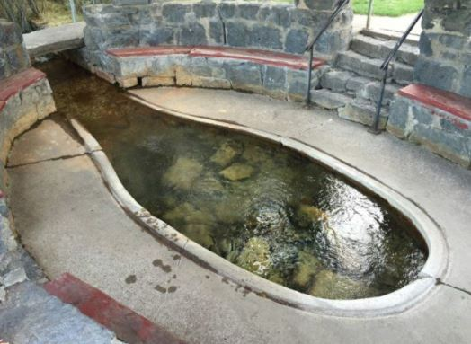

Free Soda on Us
Hooper Springs, located at 1805 Government Dam Rd, where carbonated water comes out of the ground and flows into a nearby creek. The spring is covered by a small pavilion and has a place to get down close to the water. Visitors can take a cup and dip in the bubbling brew and drink the carbonated mineral water straight from the source. The mineral content of the carbonated water has a strong taste, but when a little powdered lemonade is added, it was tolerable carbonated lemonade. The cling-ons gulped it with vigor to prove their manhood.